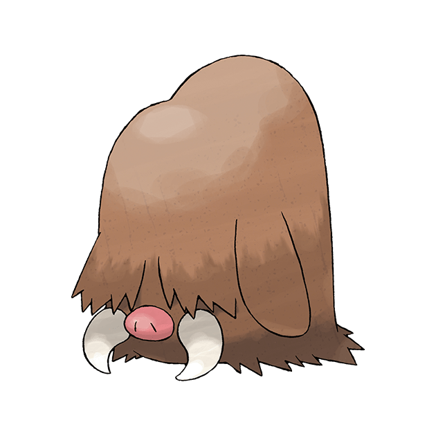

<body><div class="img-box" style="float:right;"></div><h1>长毛猪</h1>
<h3><span 外貌"></span><span -headline" .E5.A4.96.E8.B2.8C">外貌</span></h3>
<p>长毛猪有又长又厚的体毛、红色的鼻子和两个象牙，眼睛被体毛所覆盖。
</p>
<h4><span 性别差异"></span><span -headline" .E6.80.A7.E5.88.AB.E5.B7.AE.E5.BC.82">性别差异</span></h4>
<dl><dd><i>主頁面：</i><i><a  title="拥有性别差异的宝可梦列表">拥有性别差异的宝可梦列表</a></i></dd></dl>
<p>雌性的獠牙更短。
</p>
<h3><span 特殊能力"></span><span -headline" .E7.89.B9.E6.AE.8A.E8.83.BD.E5.8A.9B">特殊能力</span></h3>
<p>嗅觉和听觉十分灵敏。
</p>
<h3><span 性情"></span><span -headline" .E6.80.A7.E6.83.85">性情</span></h3>
<p>朝着对手直冲上去时，背上的毛会倒竖起来，对声音极度敏感。
</p>
<h3><span 栖息地"></span><span -headline" .E6.A0.96.E6.81.AF.E5.9C.B0">栖息地</span></h3>
<p>生活在冰雪覆盖的地方。
</p>
<h3><span 饮食"></span><span -headline" .E9.A5.AE.E9.A3.9F">饮食</span></h3>
<dl><dd><i>主頁面：</i><i><a  title="宝可梦食物">宝可梦食物</a></i></dd></dl>
</body>